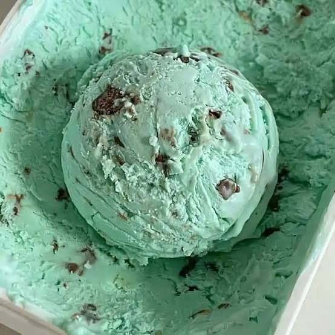

56 · 29 · 4 시간 전 · 원문

민초는 역사깊은 호감픽인데 치약이니 괴식이니 깎아내리려는 준동단이 꾸준히 출몰함
수집 당시 댓글 29개
년경력전차장 · 5 시간 전
아잇참그거뭐야 · 5 시간 전
레지던트 · 5 시간 전
피카츄라이츄아구몬꼬부기 · 5 시간 전
'괴식을 좋아하는 나'에 취했구나
유아학교 · 5 시간 전
번항게 · 5 시간 전
Staropramen · 4 시간 전
솔반투 · 4 시간 전
↳ 답글 · LunaticChaos · 4 시간 전
콥터!!
에이크노 · 4 시간 전
민초단열성단원 · 4 시간 전
민초, 진순, 맥콜, 데자와, 닥터페퍼는 사실 일반인들은 모두가 사랑하지만 커뮤에서만 호들갑 떠는 호감픽이라는거임
↳ 답글 · silk · 3 시간 전
데자와는 빼자
↳ 답글 · 5783578965 · 1 시간 전
맥콜은 먹어본적이 없는데 나머지는 다 맛잘알픽이라는 것임
코스톨라니 · 4 시간 전
ㄱㅂㅂ · 4 시간 전
베라꺼 맛있는데
주관적인요정 · 4 시간 전
얼린치약이라니 신박한데?
메카다나카 · 4 시간 전
나부 · 3 시간 전
마운자로 땜에 요산수치 올라서 단거 먹으면 안되는데 너땜에 민초땡기자너
빗방울 · 3 시간 전
치약에서 초코맛 느끼는 사람들이 은근히 많은가봐
당신말이맞습니다 · 3 시간 전
초딩 때부터 배라 가면 하프갤런 올 민초 박음
Entfremdung · 3 시간 전
호감픽과 호1감픽은 1하나 차이다
크툴루 · 3 시간 전
사악한 사파놈
감귤온천 · 3 시간 전
루비쨩?하——잇!나니가스키?
mz틀딱 · 3 시간 전
ㅈㄹㄴㄴ
인간실격짐승합격 · 2 시간 전
개 영상이나 고양이 영상 올라올땐 좋아하면서개랑 고양이 좋아한다니까 극혐하는 이중성이라니
입맛다시는청년 · 2 시간 전
요리왕코난 · 1 시간 전
베라 민초는 ㄹㅈ이지
디아라한 · 1 시간 전
BlackWolfStudio · 10 분 전
댓글
수집 당시 댓글 29개
년경력전차장 · 5 시간 전
아잇참그거뭐야 · 5 시간 전
레지던트 · 5 시간 전
피카츄라이츄아구몬꼬부기 · 5 시간 전
'괴식을 좋아하는 나'에 취했구나
유아학교 · 5 시간 전
번항게 · 5 시간 전
Staropramen · 4 시간 전
솔반투 · 4 시간 전
· LunaticChaos · 4 시간 전
콥터!!
에이크노 · 4 시간 전
민초단열성단원 · 4 시간 전
민초, 진순, 맥콜, 데자와, 닥터페퍼는 사실 일반인들은 모두가 사랑하지만 커뮤에서만 호들갑 떠는 호감픽이라는거임
· silk · 3 시간 전
데자와는 빼자
· 5783578965 · 1 시간 전
맥콜은 먹어본적이 없는데 나머지는 다 맛잘알픽이라는 것임
코스톨라니 · 4 시간 전
ㄱㅂㅂ · 4 시간 전
베라꺼 맛있는데
주관적인요정 · 4 시간 전
얼린치약이라니 신박한데?
메카다나카 · 4 시간 전
나부 · 3 시간 전
마운자로 땜에 요산수치 올라서 단거 먹으면 안되는데 너땜에 민초땡기자너
빗방울 · 3 시간 전
치약에서 초코맛 느끼는 사람들이 은근히 많은가봐
당신말이맞습니다 · 3 시간 전
초딩 때부터 배라 가면 하프갤런 올 민초 박음
Entfremdung · 3 시간 전
호감픽과 호1감픽은 1하나 차이다
크툴루 · 3 시간 전
사악한 사파놈
감귤온천 · 3 시간 전
루비쨩?
하——잇!
나니가스키?
mz틀딱 · 3 시간 전
ㅈㄹㄴㄴ
인간실격짐승합격 · 2 시간 전
개 영상이나 고양이 영상 올라올땐 좋아하면서
개랑 고양이 좋아한다니까 극혐하는 이중성이라니
입맛다시는청년 · 2 시간 전
요리왕코난 · 1 시간 전
베라 민초는 ㄹㅈ이지
디아라한 · 1 시간 전
BlackWolfStudio · 10 분 전